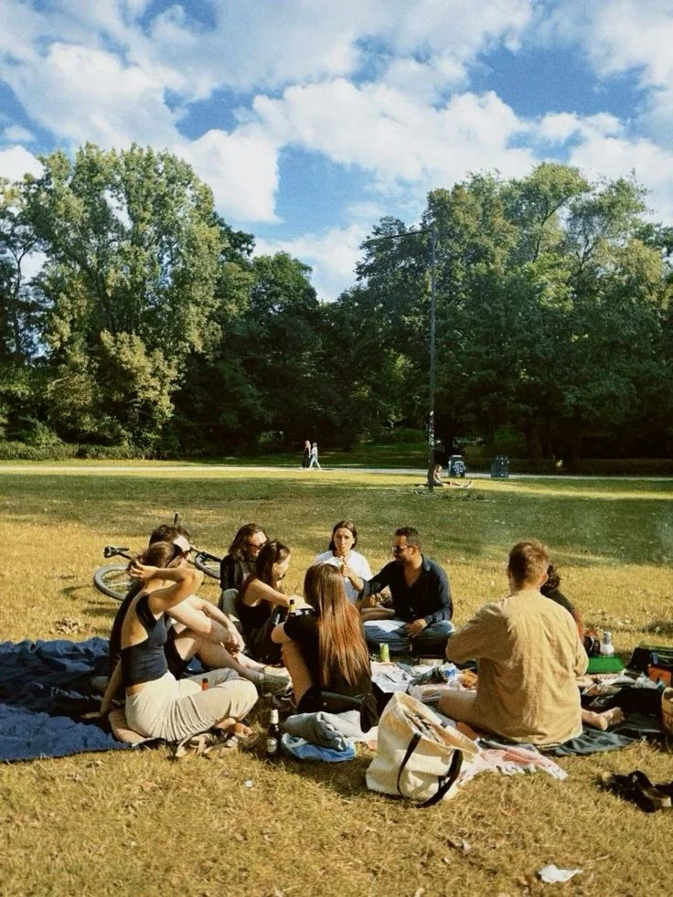

<title>Tampere Designs About C</title>
<meta name="claude:viewport-fit-sides" content="cover">
<link rel="preconnect" href="https://fonts.googleapis.com">
<link rel="preconnect" href="https://fonts.gstatic.com" crossorigin>
<link rel="stylesheet" href="https://fonts.googleapis.com/css2?family=Bricolage+Grotesque:opsz,wght@12..96,700;12..96,800&family=Rethink+Sans:wght@400;500;600;700&family=Caveat:wght@600&display=swap">
<style>
/* Layout: About page, alternative B. Split hero (copy left, taped photo collage right), a blue numbers band like
   the homepage's "Every kind of designer" band, a three-step story, the three colour cards for what we believe,
   the organisers, a closing ticket-style call to action, and the homepage's black footer. */
:root {
  --paper: #ffffff;
  --grid: #eeeef0;
  --ink: #161616;
  --soft: #4b4b50;
  --blue: #0042BC;
  --green: #148F48;
  --orange: #E35004;
  --yellow: #FFE45C;
  --pink: #FFB3F1;
  --mint: #BDF5DE;
  --tape: rgba(70, 98, 214, .86);
  --f-display: "Bricolage Grotesque", "Helvetica Neue", Arial, sans-serif;
  --f-body: "Rethink Sans", "Helvetica Neue", Arial, sans-serif;
  --f-hand: "Caveat", "Segoe Print", cursive;
  --side: max(16px, 6vw);
  color-scheme: light;
}
* { box-sizing: border-box; }
[hidden] { display: none !important; }
body {
  margin: 0; color: var(--ink); font: 400 17px/1.55 var(--f-body); -webkit-font-smoothing: antialiased; overflow-x: clip;
  background-color: var(--paper);
  background-image: linear-gradient(var(--grid) 1px, transparent 1px), linear-gradient(90deg, var(--grid) 1px, transparent 1px);
  background-size: 28px 28px;
}
a { color: inherit; }
:focus-visible { outline: 3px solid var(--blue); outline-offset: 3px; }
.wrap { max-width: 1240px; margin: 0 auto; padding-left: max(var(--side), env(safe-area-inset-left, 0px)); padding-right: max(var(--side), env(safe-area-inset-right, 0px)); }
h1, h2, h3 { font-family: var(--f-display); letter-spacing: -.02em; margin: 0; text-wrap: balance; }
h2 { font-size: clamp(1.8rem, 3.4vw, 2.6rem); line-height: 1.05; font-weight: 800; }

.btn { display: inline-flex; align-items: center; gap: 8px; min-height: 44px; padding: 10px 16px; border: 2px solid var(--ink); border-radius: 6px; background: #fff; box-shadow: 3px 3px 0 var(--ink); font: 600 15px/1 var(--f-body); text-decoration: none; transition: transform .12s, box-shadow .12s; }
.btn:hover { transform: translate(-1px, -1px); box-shadow: 4px 4px 0 var(--ink); }
.btn:active { transform: translate(2px, 2px); box-shadow: 1px 1px 0 var(--ink); }
.btn.dark { background: var(--ink); color: #fff; }
.link { display: inline-flex; align-items: center; gap: 6px; font-weight: 600; font-size: 15px; text-decoration: none; }
.link:hover { text-decoration: underline; text-underline-offset: 4px; }

/* header, as on the homepage */
.nav .wrap { display: flex; align-items: center; justify-content: space-between; gap: 16px; padding-block: 18px; }
.logo { display: inline-flex; align-items: center; gap: 8px; font: 800 15px/1.05 var(--f-display); text-decoration: none; }
.logo svg { width: 30px; height: 30px; }
.nav ul { display: flex; gap: 32px; list-style: none; margin: 0; padding: 0; font-size: 15px; }
.nav ul a { text-decoration: none; }
.nav ul a[aria-current="page"] { text-decoration: underline; text-decoration-thickness: 2px; text-underline-offset: 6px; }
@media (max-width: 720px) { .nav ul { display: none; } }

/* ---------- hero: copy left, collage right ---------- */
.hero .wrap { display: grid; grid-template-columns: minmax(0, 1.1fr) minmax(0, 1fr); gap: 24px clamp(32px, 5vw, 80px); align-items: end; padding-block: clamp(40px, 8vh, 88px) clamp(16px, 3vh, 32px); }
.hero .aside { justify-self: end; max-width: 30ch; margin: 0; font: 600 26px/1.15 var(--f-hand); color: var(--blue); transform: rotate(-3deg); text-align: right; }
.hero .copy { display: grid; gap: 20px; justify-items: start; }
.eyebrow { font: 600 26px/1 var(--f-hand); color: var(--blue); transform: rotate(-3deg); }
.hero h1 { font-size: clamp(3rem, 6.6vw, 5.6rem); line-height: .95; font-weight: 800; letter-spacing: -.035em; }
.hero h1 .ul { position: relative; white-space: nowrap; }
.hero h1 .ul svg { position: absolute; left: -2%; bottom: -.12em; width: 104%; height: .3em; overflow: visible; }
.hero p { margin: 0; max-width: 46ch; color: var(--soft); font-size: clamp(16px, 1.3vw, 18px); }
.hero .ctas { display: flex; flex-wrap: wrap; align-items: center; gap: 12px 20px; margin-top: 4px; }

@media (max-width: 860px) {
  .hero .wrap { grid-template-columns: minmax(0, 1fr); }
  .collage { max-width: 520px; width: 100%; justify-self: center; }
}


/* ---------- film strip: pulls out of the canister as you scroll ---------- */
.film-sec { position: relative; }
.film-sec .pin { position: sticky; top: 0; height: 100svh; display: grid; align-content: center; overflow: hidden; }
.film-row { position: relative; display: flex; align-items: center; padding-left: max(var(--side), env(safe-area-inset-left, 0px)); }
.can { position: relative; z-index: 3; flex: none; width: clamp(96px, 11vw, 170px); margin-right: -14px; }
.can svg { display: block; width: 100%; height: auto; overflow: visible; }
.swipe { position: absolute; left: max(var(--side), env(safe-area-inset-left, 0px)); top: calc(50% - clamp(170px, 19vw, 230px)); font: 600 24px/1 var(--f-hand); transform: rotate(-6deg); display: flex; align-items: end; gap: 4px; }
.swipe svg { width: 34px; height: 24px; }
.reel { position: relative; z-index: 2; flex: 1; min-width: 0; overflow: hidden; padding-block: 120px; margin-block: -120px; }
.track { position: relative; flex: none; width: max-content; will-change: transform; }
.strip { position: relative; display: flex; gap: clamp(10px, 1vw, 16px); padding: clamp(30px, 2.8vw, 40px) clamp(14px, 1.4vw, 20px); }
.strip::before { content: ""; position: absolute; inset: 0; z-index: -1; background: #5A2E1A; border-radius: 4px; filter: url(#rough); }
.holes { position: absolute; left: 0; right: 0; height: clamp(8px, .8vw, 11px); z-index: 1; pointer-events: none;
  background: repeating-linear-gradient(90deg, transparent 0 9px, #F6F1E7 9px 23px, transparent 23px 32px); border-radius: 2px; filter: url(#rough); }
.holes.t { top: clamp(10px, 1vw, 14px); } .holes.b { bottom: clamp(10px, 1vw, 14px); }
.frame { position: relative; flex: none; width: clamp(180px, 20vw, 320px); aspect-ratio: 5 / 4; margin: 0; background: #2a160c; border-radius: 3px; overflow: hidden; }
.frame img { display: block; width: 100%; height: 100%; object-fit: cover; filter: saturate(1.05) contrast(1.02); }
.frame.blank { background: #6b3a22; }
.frame.blank svg { width: 100%; height: 100%; display: block; }
.ann { position: absolute; z-index: 4; font: 600 clamp(20px, 1.6vw, 26px)/1.05 var(--f-hand); color: var(--ink); white-space: nowrap; pointer-events: none; }
.ann svg { display: block; width: 30px; height: 26px; }
.ann.up { bottom: calc(100% + clamp(36px, 3vw, 46px)); } .ann.down { top: calc(100% + clamp(36px, 3vw, 46px)); }
.ann svg { margin: 2px 0 2px 24px; }
.year { position: absolute; z-index: 4; bottom: calc(100% + 54px); font: 800 clamp(2.4rem, 4vw, 3.6rem)/1 var(--f-display); color: #F7A8E8; -webkit-text-stroke: 2px #C94FB0; letter-spacing: -.02em; transform: rotate(-4deg); }
.film-sec .credit { position: absolute; left: max(var(--side), env(safe-area-inset-left, 0px)); bottom: clamp(24px, 8vh, 80px); font: 600 24px/1 var(--f-hand); }
.film-sec .credit::after { content: ""; display: block; width: 100%; height: 3px; margin-top: 4px; background: #F7A8E8; border-radius: 2px; transform: rotate(-1deg); }
@media (prefers-reduced-motion: reduce) {
  .film-sec { height: auto !important; }
  .film-sec .pin { position: static; height: auto; padding-block: 120px 100px; overflow-x: auto; }
  .track { transform: none !important; }
  .reel { overflow-x: auto; }
}

/* ---------- our story: a few large sentences, no heading ---------- */
.story { padding-block: clamp(64px, 11vh, 128px); }
.story .text { max-width: 30ch; margin: 0; font: 800 clamp(1.7rem, 3.4vw, 2.9rem)/1.18 var(--f-display); letter-spacing: -.02em; text-wrap: pretty; }
.story .text .hi { padding: 0 .12em; border-radius: 4px; box-decoration-break: clone; -webkit-box-decoration-break: clone; }
.story .text .y { background: var(--yellow); } .story .text .p { background: var(--pink); } .story .text .m { background: var(--mint); }
.story .text .soft { color: #8a8a90; }
.story .sign { display: block; margin-top: 24px; font: 600 26px/1 var(--f-hand); color: var(--blue); transform: rotate(-2deg); }

/* ---------- values: the homepage's tilted colour cards ---------- */
.values { padding-block: clamp(56px, 9vh, 96px); }
.values h2 { text-align: center; margin-bottom: clamp(28px, 4vw, 48px); }
.cards { display: grid; grid-template-columns: repeat(3, minmax(0, 1fr)); gap: clamp(20px, 3vw, 40px); list-style: none; margin: 0; padding: 0; }
.card { position: relative; min-height: 300px; display: grid; align-content: space-between; padding: 22px; border-radius: 8px; color: #fff; box-shadow: 4px 5px 0 rgba(20,20,20,.9); transform: rotate(var(--r)); transition: transform .25s; }
.card:hover { transform: rotate(0) translateY(-4px); }
.card:nth-child(1) { background: var(--green); --r: -2deg; }
.card:nth-child(2) { background: var(--orange); --r: 1.5deg; margin-top: 18px; }
.card:nth-child(3) { background: var(--blue); --r: -1deg; }
.card h3 { font-size: 1.3rem; font-weight: 800; }
.card p { margin: 0; text-align: right; font-size: 15px; line-height: 1.45; max-width: 28ch; justify-self: end; }
.card .corner { position: absolute; width: 16px; height: 16px; }
.card .corner.tr { top: 22px; right: 22px; border-top: 4px solid #fff; border-right: 4px solid #fff; }
.card .corner.bl { left: 22px; bottom: 22px; clip-path: polygon(0 0, 0 100%, 100% 100%); background: var(--yellow); }
.card:nth-child(2) .corner.bl { background: var(--pink); } .card:nth-child(3) .corner.bl { background: var(--mint); }
@media (max-width: 860px) { .cards { grid-template-columns: minmax(0, 1fr); max-width: 440px; margin: 0 auto; } .card { min-height: 200px; } .card:nth-child(2) { margin-top: 0; } }
@media (max-width: 520px) { .pic figcaption { font-size: 18px; } }

/* ---------- organisers ---------- */
.team { padding-block: clamp(40px, 7vh, 80px); }
.team .head { display: flex; flex-wrap: wrap; justify-content: space-between; align-items: end; gap: 16px; margin-bottom: 28px; }
.people { display: grid; grid-template-columns: repeat(4, minmax(0, 1fr)); gap: clamp(16px, 2.4vw, 28px); list-style: none; margin: 0; padding: 0; }
.person { display: grid; gap: 10px; padding: 14px; background: #fff; border: 2px solid var(--ink); border-radius: 8px; box-shadow: 4px 4px 0 var(--ink); }
.person .face { aspect-ratio: 1; border-radius: 4px; display: grid; place-items: center; font: 800 clamp(2rem, 4vw, 3rem)/1 var(--f-display); border: 2px solid var(--ink); }
.person:nth-child(1) .face { background: var(--yellow); } .person:nth-child(2) .face { background: var(--pink); }
.person:nth-child(3) .face { background: var(--mint); } .person:nth-child(4) .face { background: #CFE0FF; }
.person b { font: 800 1.05rem/1.2 var(--f-display); }
.person span { color: var(--soft); font-size: 14px; }
@media (max-width: 860px) { .people { grid-template-columns: repeat(2, minmax(0, 1fr)); } }

/* ---------- closing call to action, ticket style ---------- */
.cta { padding-block: clamp(40px, 7vh, 80px) clamp(72px, 12vh, 128px); }
.ticket { display: grid; grid-template-columns: minmax(0, 1fr) auto; gap: 24px; align-items: center; padding: clamp(24px, 4vw, 44px); background: var(--orange); color: #fff; border-radius: 10px;
  -webkit-mask: radial-gradient(circle 16px at 0 50%, #0000 98%, #000) left / 51% 100% no-repeat, radial-gradient(circle 16px at 100% 50%, #0000 98%, #000) right / 51% 100% no-repeat;
          mask: radial-gradient(circle 16px at 0 50%, #0000 98%, #000) left / 51% 100% no-repeat, radial-gradient(circle 16px at 100% 50%, #0000 98%, #000) right / 51% 100% no-repeat; }
.ticket h2 { font-size: clamp(1.6rem, 3vw, 2.4rem); }
.ticket p { margin: 8px 0 0; max-width: 50ch; }
.ticket .btn { color: var(--ink); }
@media (max-width: 700px) { .ticket { grid-template-columns: minmax(0, 1fr); } }

footer { background: #111; color: #fff; padding-block: 40px 24px; }
footer .links { display: flex; justify-content: space-between; gap: 24px; font-size: 14px; }
footer .links div { display: grid; gap: 6px; }
footer .links a { text-decoration: none; }
footer .links a:hover { text-decoration: underline; text-underline-offset: 3px; }
footer .big { margin: 40px 0 0; font: 800 min(8.4vw, 8.2rem)/.9 var(--f-display); letter-spacing: -.02em; white-space: nowrap; }

/* entrance: the collage photos drop in one after another */
@media (prefers-reduced-motion: reduce) { .card { transition: none; } }
</style>

<svg width="0" height="0" style="position:absolute" aria-hidden="true"><filter id="rough" x="-3%" y="-10%" width="106%" height="120%"><feTurbulence type="fractalNoise" baseFrequency=".035" numOctaves="2" seed="4" result="n"/><feDisplacementMap in="SourceGraphic" in2="n" scale="3.5" xChannelSelector="R" yChannelSelector="G"/></filter></svg>
<header class="nav">
  <div class="wrap">
    <a class="logo" href="#"><span>Tampere<br>Designs</span><svg viewBox="0 0 32 32" aria-hidden="true"><path d="M2 4h16v6h-5v18H7V10H2z" fill="currentColor"/><path d="M15 4h4a12 12 0 0 1 0 24h-4v-6h4a6 6 0 0 0 0-12h-4z" fill="currentColor"/></svg></a>
    <ul><li><a href="#">Events</a></li><li><a href="#">Contribute</a></li><li><a href="#" aria-current="page">About us</a></li></ul>
    <a class="btn" href="#">← Join our Telegram</a>
  </div>
</header>

<main>
  <section class="hero" aria-labelledby="about-title">
    <div class="wrap">
      <div class="copy">
        <span class="eyebrow">hello, nice to meet you</span>
        <h1 id="about-title">About us</h1>
        <p>Tampere Designs is a community for designers, creatives and IT people in Tampere. We gather, share ideas and make things together, help each other grow, and in turn help the city around us grow too.</p>
        <div class="ctas"><a class="btn dark" href="#">← Join our Telegram</a><a class="link" href="#">← Browse events</a></div>
      </div>
      <p class="aside">a little film roll of who we are, scroll to pull it out →</p>
    </div>
  </section>


  <section class="film-sec" id="film" aria-label="Photos from our meetups">
    <div class="pin">
      <span class="swipe" aria-hidden="true">scroll<svg viewBox="0 0 34 24"><path d="M2 18C10 6 20 4 30 10M30 10l-7-1M30 10l-3 6" fill="none" stroke="#161616" stroke-width="1.8" stroke-linecap="round"/></svg></span>
      <div class="film-row">
        <div class="can"><svg viewBox="0 0 120 190" aria-hidden="true"><g filter="url(#rough)" stroke="#161616" stroke-width="2.2" stroke-linejoin="round">
  <rect x="44" y="4" width="32" height="14" rx="3" fill="#9a9a9a"/>
  <rect x="14" y="16" width="92" height="14" rx="4" fill="#bcbcbc"/>
  <rect x="10" y="28" width="100" height="140" rx="10" fill="#2E8B4A"/>
  <rect x="14" y="166" width="92" height="14" rx="4" fill="#bcbcbc"/>
  <rect x="22" y="44" width="76" height="108" rx="4" fill="#F6F1E7"/>
</g>
<g font-family="Bricolage Grotesque, sans-serif" font-weight="800" text-anchor="middle" fill="#161616">
  <text x="60" y="78" font-size="28">TD</text>
  <text x="60" y="104" font-size="20">2026</text>
  <text x="60" y="128" font-size="10" font-family="Rethink Sans, sans-serif" font-weight="600">COMMUNITY</text>
  <text x="60" y="141" font-size="10" font-family="Rethink Sans, sans-serif" font-weight="600">ROLL · 36</text>
</g></svg></div>
        <div class="reel"><div class="track" id="track"><span class="year" style="left:38%">2026</span><div class="strip"><span class="holes t"></span><span class="holes b"></span><div style="position:relative"><figure class="frame"></figure></div><div style="position:relative"><span class="ann up" style="left:20%">first picnic of the summer!<svg viewBox="0 0 30 26" aria-hidden="true"><path d="M4 4C12 6 18 12 22 22M22 22l-6-2M22 22l1-6" fill="none" stroke="#161616" stroke-width="1.8" stroke-linecap="round"/></svg></span><figure class="frame"></figure></div><div style="position:relative"><figure class="frame"></figure></div><div style="position:relative"><span class="ann down" style="left:28%"><svg viewBox="0 0 30 26" aria-hidden="true"><path d="M4 22C12 20 18 14 22 4M22 4l-6 2M22 4l1 6" fill="none" stroke="#161616" stroke-width="1.8" stroke-linecap="round"/></svg>Hervanta, golden hour</span><figure class="frame"></figure></div><div style="position:relative"><figure class="frame"></figure></div><div style="position:relative"><span class="ann up" style="left:28%">crit club snacks<svg viewBox="0 0 30 26" aria-hidden="true"><path d="M26 4C18 6 12 12 8 22M8 22l6-2M8 22l-1-6" fill="none" stroke="#161616" stroke-width="1.8" stroke-linecap="round"/></svg></span><figure class="frame"></figure></div><div style="position:relative"><span class="ann down" style="left:18%"><svg viewBox="0 0 30 26" aria-hidden="true"><path d="M26 22C18 20 12 14 8 4M8 4l6 2M8 4l-1 6" fill="none" stroke="#161616" stroke-width="1.8" stroke-linecap="round"/></svg>everyone welcome :)</span><figure class="frame"></figure></div><div style="position:relative"><span class="ann up" style="left:10%">more soon…</span><figure class="frame blank" aria-hidden="true"><svg viewBox="0 0 100 80" preserveAspectRatio="none"><g stroke="#8a4a2c" stroke-width="1.4" fill="none" filter="url(#rough)"><path d="M-20 82L10 -2"/><path d="M-11 82L19 -2"/><path d="M-2 82L28 -2"/><path d="M7 82L37 -2"/><path d="M16 82L46 -2"/><path d="M25 82L55 -2"/><path d="M34 82L64 -2"/><path d="M43 82L73 -2"/><path d="M52 82L82 -2"/><path d="M61 82L91 -2"/><path d="M70 82L100 -2"/><path d="M79 82L109 -2"/><path d="M88 82L118 -2"/><path d="M97 82L127 -2"/><path d="M106 82L136 -2"/></g></svg></figure></div></div></div></div>
      </div>
      <span class="credit">our year so far</span>
    </div>
  </section>

  <section class="story" aria-label="Our story">
    <div class="wrap">
      <p class="text">It started with <span class="hi y">a handful of designers</span> who wanted somewhere to talk shop outside work and school. <span class="soft">Then friends brought friends.</span> Today we're students, juniors and seniors from <span class="hi p">every corner of design and tech</span>, meeting every week to learn, make things and <span class="hi m">give back to Tampere</span>.</p>
      <span class="sign">– the Tampere Designs crew</span>
    </div>
  </section>

  <section class="values" aria-labelledby="values-title">
    <div class="wrap">
      <h2 id="values-title">What we care about</h2>
      <ul class="cards">
        <li class="card"><span class="corner tr" aria-hidden="true"></span><h3>Everyone's welcome</h3><p>No portfolio needed. If you shape how things work, look or feel, you belong here.</p><span class="corner bl" aria-hidden="true"></span></li>
        <li class="card"><span class="corner tr" aria-hidden="true"></span><h3>Learn by doing</h3><p>We try things together, share what went wrong, and get better side by side.</p><span class="corner bl" aria-hidden="true"></span></li>
        <li class="card"><span class="corner tr" aria-hidden="true"></span><h3>Give back</h3><p>Good design makes a city better. We put our skills to work for Tampere.</p><span class="corner bl" aria-hidden="true"></span></li>
      </ul>
    </div>
  </section>

  <section class="team" aria-labelledby="team-title">
    <div class="wrap">
      <div class="head"><h2 id="team-title">The people behind it</h2><a class="link" href="#">← Help us organise</a></div>
      <ul class="people">
        <li class="person"><span class="face" aria-hidden="true">AK</span><b>Organiser name</b><span>UX designer</span></li>
        <li class="person"><span class="face" aria-hidden="true">LM</span><b>Organiser name</b><span>Graphic designer</span></li>
        <li class="person"><span class="face" aria-hidden="true">TV</span><b>Organiser name</b><span>Service designer</span></li>
        <li class="person"><span class="face" aria-hidden="true">JS</span><b>Organiser name</b><span>Developer</span></li>
      </ul>
    </div>
  </section>

  <section class="cta" aria-labelledby="cta-title">
    <div class="wrap"><div class="ticket">
      <div><h2 id="cta-title">There's a seat for you</h2><p>Come to a meetup, bring a friend, or just say hi in our Telegram group.</p></div>
      <a class="btn" href="#">← Join our Telegram</a>
    </div></div>
  </section>
</main>

<footer>
  <div class="wrap">
    <div class="links"><div><a href="#">About</a><a href="#">Contact</a><span>© 2026 Tampere Designs</span></div><div style="text-align:right"><a href="#">LinkedIn</a><a href="#">Telegram</a><a href="#">Instagram</a></div></div>
    <p class="big" aria-hidden="true">TAMPERE DESIGNS</p>
  </div>
</footer>

<script>
(() => {
  // the film strip pulls out of the canister while the section is pinned
  if (matchMedia("(prefers-reduced-motion: reduce)").matches) return;
  const sec = document.getElementById("film"), track = document.getElementById("track");
  const reel = sec.querySelector(".reel");
  const size = () => {
    const rw = reel.clientWidth, tw = track.offsetWidth;
    track.dataset.start = rw * .3 - tw;     // only the leading end of the strip is out of the canister
    track.dataset.end = 0;                 // fully pulled out
    sec.style.height = innerHeight + (tw - rw * .3) * .9 + "px";
    frame();
  };
  const frame = () => {
    const r = sec.getBoundingClientRect();
    const t = Math.min(1, Math.max(0, -r.top / (r.height - innerHeight || 1)));
    const s0 = +track.dataset.start, s1 = +track.dataset.end;
    track.style.transform = `translateX(${s0 + (s1 - s0) * t}px)`;
    ticking = false;
  };
  let ticking = false;
  addEventListener("scroll", () => { if (!ticking) { ticking = true; requestAnimationFrame(frame); } }, { passive: true });
  addEventListener("resize", size);
  document.fonts.ready.then(size); size();
})();
</script>
